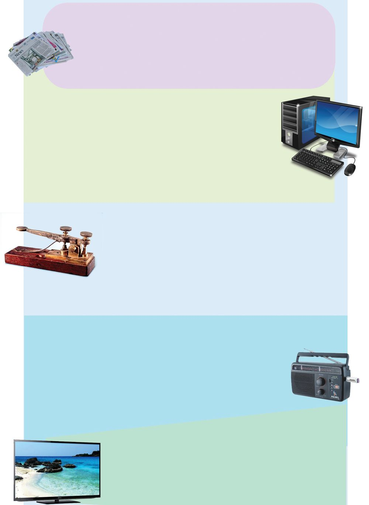
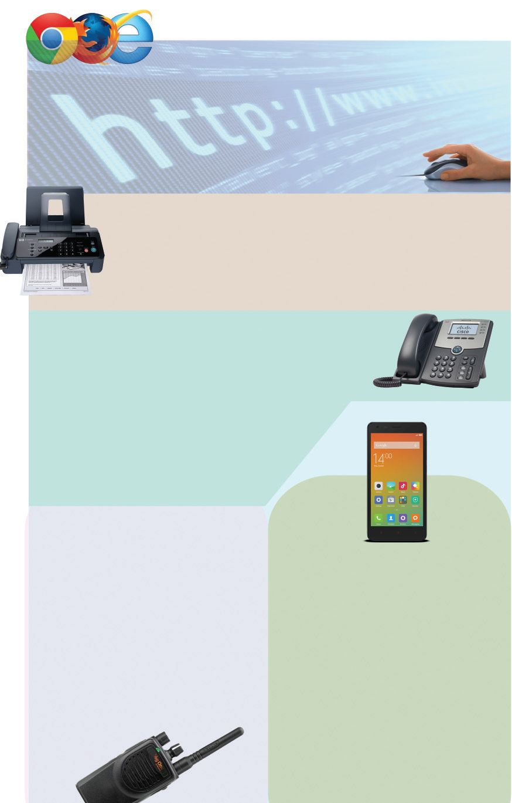

മുസ്ഥ-—≥ :
വേണു :
മുസ്ഥ-—≥ :
വേണു :
മുസ്ഥ-—≥ :
വേണു :
മുസ്ഥ-—≥ :
മുസ്ഥ—ാ, അമേ- ര ഇ- ത്ഥ - യ ഇ- ല ഉ≈ ശാലിനിണ്ണേണ്ണിയുടെ
കല്യാണ-സ്ഥി‚െ ക്ഷണത്ഥസ്ഥ് വന്നിന്തു-≠്.
ഓഹോ, എന്നാണ് വന്നത്? പോസ്-‰്മാനേ ക≠ി-√√ോ?
ഇ∏ോƒ അവിടെ നിന്ന് അയണ്ണിന്തേ ഉ≈ൂ.
കാലം പോയ പോത്ഥേ, കസ്ഥ് അയണ്ണ-∏ോƒ തന്നെ അത്
ഇവിടെ കിന്തിയോ?
ഇത് ഇ˛-മെയിൺ ആണ് മുസ്ഥ-—ാ.
പ≠ൊത്ഥെ ഒരു കസ്ഥയ-ണ്ണാൺ കിന്താ≥ ദിവസ-ത്മളോളം
എടുത്ഥുമായിരുന്നു.
അതേയോ? എഗ്ലാണ-ത്മനെ?
അത്ഥാലസ്ഥ് കബ്ബ്യൂന്തറൊന്നും ഇ√ായിരുന്നു.
മാ‰-ത്മƒ... മാ‰-ത്മƒ...
അതുമാത്രമ-√, ഒരുപാട് വിവര-ത്മƒ
അറിയിത്ഥാനു-≠്.
അΩേ, എ‚െ
പഠന-യാത്രയുടെ കാര്യം
അറിയിത്ഥാ≥ അ—ന്
കസ്ഥെഴുതുക-യാണോ?
കസ്ഥു കിന്താ≥ മൂന്നുനാല് ദിവസ-മാകി√േ? അΩയ്ത്ഥൊന്ന് ഫോച്ച
ചെയ്ത് പറ-™ാൺ പോരേ?
വായ്യസ്ഥാവിനിമയ രംഗസ്ഥ് മാ‰-ത്മƒ ഉ≠ാവാനു≈ കാരണ-ത്മƒ
എഗ്ലെ-√ാമായിരിത്ഥും?
നിത്മളുടെ പരിസ-രപുസ്തക-സ്ഥിലെഴുതൂ...
വായ്യസ്ഥകƒ കൈമാറുന്നതിലെ വേഗത, കുറ-™- ചെലവ്, വിനിമയ
സൗകര്യം എന്നിവയ്ത്ഥനുസ-രിണ്ണ് വലിയ മാ‰-ത്മƒ വന്നുകൊ-≠ിരിത്ഥുന്നു.
കേƒവിയിൺ നിന്ന് കാഴ്ചയിലേത്ഥ്
വായ്യസ്ഥാവിനിമയ രംഗസ്ഥ് അനുദിനം മാ‰-ത്മƒ വന്നുകൊ-≠ിരിത്ഥുകയാണ√ോ, അൺ∏കാലം മുബ്ബുവരെ വായ്യസ്ഥകƒ അറിയാ≥ റേഡിയോ
മാത്രമായിരുന്നു നാം ഉപയോഗിണ്ണിരുന്ന ഇലക്ട്രോണിക് ഉപക-രണം.
എന്നാൺ ഇന്നോ?
മാ‰-ത്മƒ തിരിണ്ണറി™് പന്തിക പൂയ്യസ്ഥിയാത്ഥൂ.
പരിസ-രപ-ഠനം
റേഡിയോ
കസ്ഥ്
110
ടെലിഫോച്ച
ഇ˛മെയിൺ
Page 47
Figure fig_ch04_p047_01 (Page 47)

Figure fig_ch04_p047_02 (Page 47)
ഞത്മƒ വായ്യസ്ഥാവിനിമയ രംഗസ്ഥെ നാഴിക-ത്ഥ-√ുകƒ...
പത്രം
കൂന്തുകാരെ... ഞാ≥ ലോകസ്ഥിൺ ഏ‰വുമധികം പ്രചാരമു≈
വായ്യസ്ഥാവിനിമ-യോപാധിക-ളിലൊന്നാണ്. ലോകസ്ഥി‚െ ഏതു
കോണിൺ നടത്ഥുന്ന പ്രധാന വിവര-ത്മളും എനിത്ഥ് നിത്മളിലേത്ഥ്
എസ്ഥിത്ഥാ≥ കഴിയും. പുതിയ പുതിയ-വായ്യസ്ഥക-ളുമ-ായി ദിവസേന
നിത്മളെസ്ഥേടിയെസ്ഥുന്ന എന്നെ ദിന-∏ത്രം എന്നും വിളിത്ഥാറു≠്.
കബ്ബ്യൂന്തയ്യ
നിത്മƒ ഏ‰-വുമ-ധികം ഇഷ്ട-െ∏ട-ുന്ന ഇലക്ട്രോണിക് ഉപക-രണ-ം അ√േ ഞാ≥? ആവശ-്യ-ാനുസരണം ശബ്ദം, എഴുസ്ഥ്, ചിത്രത്മƒ, വീഡിയോ തുടത്മി എ√ാ വിവര-ത്മളും ഞാ≥ നിത്മƒത്ഥ്
നൺകുന്നു-≠്. മാത്രമ√ അവ സൂക്ഷിണ്ണ് വെയ്ത്ഥാനും വീ≠ും
നൺകുവാനും ഞാ≥ തøാറാണ്. പല ഗെയിമുക-ളിലും നΩ-ളൊന്നിണ്ണ് പന്നെടുത്ഥാറു-≈ത് മറന്നിന്തി-√-√ോ. എനിത്ഥ് നിരഗ്ലരം
മാ‰- ത്മ ƒ വന്നു കൊ≠േയിരിത്ഥും. അത് അറി- യ ആ≥
ശ്രമിത്ഥണേ...
ടെലിഗ്രാഫ്
എന്നെ നിത്മƒത്ഥ് അത്ര പരിച-യമു-≠ാവി-√. കാരണം
ഞാനിന്ന് ഇ√. പക്ഷേ വളരെത്ഥാലം ജനത്മƒ പെന്തെന്നു≈
ആശയ-വിനിമ-യസ്ഥിന് എന്നെയാണ് ആശ്രയിണ്ണിരുന്നത്.
അകലെ എന്നയ്യഥമു≈ "ടെലി', എഴുതുക എന്നയ്യഥമു≈
"ഗ്രാഫി≥' എന്നീ ര≠് ഗ്രീത്ഥ് പദത്മƒ ചേയ്യന്നാണ് ടെലിഗ്രാം
എന്ന് എനിത്ഥ് പേരു-≠ായത്. ഇടയ്ത്ഥെന്നിലും എന്നെയൊന്നോയ്യത്ഥണേ..
-എ‚െ ചരിത്രം അനേ-്വഷിണ്ണറിയി-√േ...
മായ്യത്ഥോണി എന്ന ശാസ്ത്ര⁄നാണ് എന്നെ നിത്മƒത്ഥ് പരിചയ-∏െടുസ്ഥിയ-ത്. വായ്യസ്ഥകƒ എത്രയും പെന്തെന്ന് ലോകം
മുഴുവ≥ എസ്ഥിത്ഥാ≥ എനിത്ഥാകും. പക്ഷേ ശബ്ദം മാത്രം
നൺകുവാനേ എനിത്ഥു കഴിയൂ. എന്നിലും വി⁄ാന-പ്രദ-വും
രസ- ക - ര - വ ഉ- മ ആയ എഗ്ലെ√ാം പരി- പ ആ- ട ഇ- ക - ള ആണ് ദിവ- സ വും
നിത്മƒത്ഥായി ഒരു- ത്ഥ ഉ- ന്ന - എത- ന്ന - റ ഇ- യ ആമോ? ഒന്ന് കേന്തു
നോത്ഥൂ... മറത്ഥരുത്.
ടെലിവിഷ≥
ഞാനിന്ന് നിത്മളുടെ വീന്തിലെ ഒരംഗസ്ഥെ പോലെയാണ്. "ടെലി'
എന്ന ഗ്രീത്ഥുപ-ദവും "വിഷ≥' എന്ന ലാ‰ി≥ പദവും ചേയ്യന്നാണ്
എ‚െ പേരു-≠ായ-ത്. വായ്യസ്ഥകƒ, വി⁄ാനം, വിനോദം
തുടത്മി ഒന്തേറെ വിശേഷ-ത്മളുമായാണ് ഞാ≥ നിത്മളുടെ മുന്നിലെസ്ഥുന്നത്.
111
കവ്വെസ്ഥാ ദൂരസ്ഥ് കൈയെസ്ഥാ ദൂരസ്ഥ്
റേഡിയോ
Page 48
Figure fig_ch04_p048_01 (Page 48)

Figure fig_ch04_p048_02 (Page 48)
ഇ‚യ്യനെ‰്
ലോകസ്ഥിലെ എ√ാഭാഗ-ത്മളിലുമു≈ കബ്ബ-്യൂന്തറുകളെ പരസ്പരം ബ'ി-∏ിണ്ണ്
വിവര-ത്മƒ കൈമാറാ≥ എനിത്ഥ് കഴിയും. പരസ്പരം ക≠ു സംസാരിത്ഥാനും
വീഡിയോ കോച്ചഫറ≥സ് നടസ്ഥാനുമെ-√ാം എനിത്ഥു സാധിത്ഥും. ഇ∏ോƒ
നിത്മƒത്ഥു മന- ഇലായി-√േ "വി⁄ാനം വിരൺ തുബ്ബിൺ' എന്ന വിശേഷണം
എനിത്ഥ് നന്നായിണ്ണേരുമെന്ന്!
ഫാക്സ്
ചിത്രത്മളും, വിവര-ത്മളുമായി എന്നെ ഏൺ∏ിത്ഥുന്ന ഏതു സμേശ-സ്ഥി‚െയും തനിപ-കയ്യ∏് ഏതു രാജ-്യസ്ഥ് വേണമെന്നിലും എസ്ഥിത്ഥാ≥ എനിത്ഥു കഴിയും. കൂടെ ഫോച്ച സμേശവും കൈമാറാ≥ പ‰ും. എ‚െ പേരാണ് ഫാക്സ്.
ടെലിഫോച്ച
""മില്ലയ്യ വാട്സച്ച... -ഇവിടെ വരൂ...
എനിത്ഥ് നിത്മളുടെ സഹായം വേണം...''
എ‚െ ആദ്യ ശബ്ദമാണിത്. 1876 മായ്യണ്ണ് 10 ന് ആണ്
ഞാ≥ ജനിണ്ണത്. അലക്സാ-≠യ്യ ഗ്രഹാംബെൺ എന്ന
മഹാനായ ശാസ്ത്ര-⁄-നാണ് എന്നെ ലോകസ്ഥിന്
പരിച-യ-∏െടുസ്ഥിയ-ത്. ഇന്ന് എ‚െ കൂന്തുകായ്യ
നിരവ-ധിയാണ്... എഗ്ലെ√ാം സേവന-ത്മളാണ്
ഞത്മƒ ഇന്ന് നൺകുന്നതെന്ന് ആലോചിണ്ണ്
നോത്ഥൂ...
പരിസ-രപ-ഠനം
മൊബൈൺഫോച്ച
വാത്ഥിടോത്ഥി
ഹലോ...
എന്നെ നിത്മƒത്ഥു പരിച-യമി√േ?
പോലീ- സ ഉ- ക ആ- ര ഉടെ
കøിൺ
നിത്മളെന്നെ ക≠ിരിത്ഥും. എന്നെ
കൂടുത-ലായി ഉപയോഗിത്ഥുന്നത്
അവരാണ്. രാജ്യസുരക്ഷയ്ത്ഥും
ക്രമസമാധാന-സ്ഥിനുമെ√ാമായി
ഞാനെ∏ോഴും ഉണയ്യന്നിരിത്ഥും.
അത്മോന്തും ഇത്മോന്തും സംസാരിത്ഥുവാനും കൊ≠ു നടത്ഥുവാനും
കഴിയുന്ന ആദ-്യസ്ഥെ ഉപക-രണം
ഞാനാണ്.
ഒന്ന് നോത്ഥൂ...-
112
ഞാനിന്ന് ആകെ സ്മായ്യന്തായിന്തി√േ?
അതേ...- നിത്മളുടെ കളിത്ഥൂന്തുകാര≥
ഫോച്ച വിളി- ത്ഥ ഉ- വ ആ≥ മാത്ര- മ √
സμേശ-ത്മƒ അയത്ഥാ≥, ഫോന്തോ
എടുത്ഥാ≥, വീഡിയോ ഗെയിമുകƒ
തുടത്മി നിത്മƒത്ഥ് വേ≠ എ√ാ
സൗകര-്യത്മളും നൺകുവാ≥ ഞാ≥
തøാ- റ ആണ് . ഇ‚യ്യനെ‰് ഉപ- ഏയാഗിത്ഥാ≥ എനിത്ഥു കഴി- യ ഉം. പരസ്പരം ക≠് സംസാരിത്ഥുവാ≥ കഴിയുന്ന എ‚െ പുതിയ പതി-∏ിനെ-∏‰ി
നിത്മƒ അറി-™ിരിത്ഥുമ-√ോ?
തരം തിരിത്ഥൂ
സμേശ-ത്മƒ കൈമാറുന്നതി‚െ സ്വഭാവം അനുസ-രിണ്ണ് താഴെ പറയുന്ന
സംവിധാനത്മളെ തരംതിരിണ്ണ് പന്തിക-യിൺ എഴുതൂ.
പത്രം
റേഡിയോ
ഇ˛മെയിൺ
ആശയ കൈമാ‰ം
വ്യ-‡ിയിലേത്ഥ്
$
ഫോച്ച
ടെലിവിഷ≥
ഫാക്സ്
ആശയ കൈമാ‰ം
സമൂഹ-സ്ഥിലേത്ഥ്
$
$
$
$
$
പത്രം
ഒരു സμേശം ഒരു കൂന്തം ആളുകƒത്ഥ് ഒരേസമയം കൈമാ‰ം
ചെøുന്ന സംവിധാന-ത്മളെ ബഹു
ജനആശയ- വ ഇനി- മ യമാധ്യമത്മƒ
എന്ന് പറയുന്നു.
അടുസ്ഥകാലം വരെ ഉപയോഗിണ്ണുവന്നിരുന്ന ചില വിവര-വിനിമയ
സംവിധാന-ത്മƒ ഇന്ന് നിലവിലി-√. എഗ്ലുകൊ≠്?
113